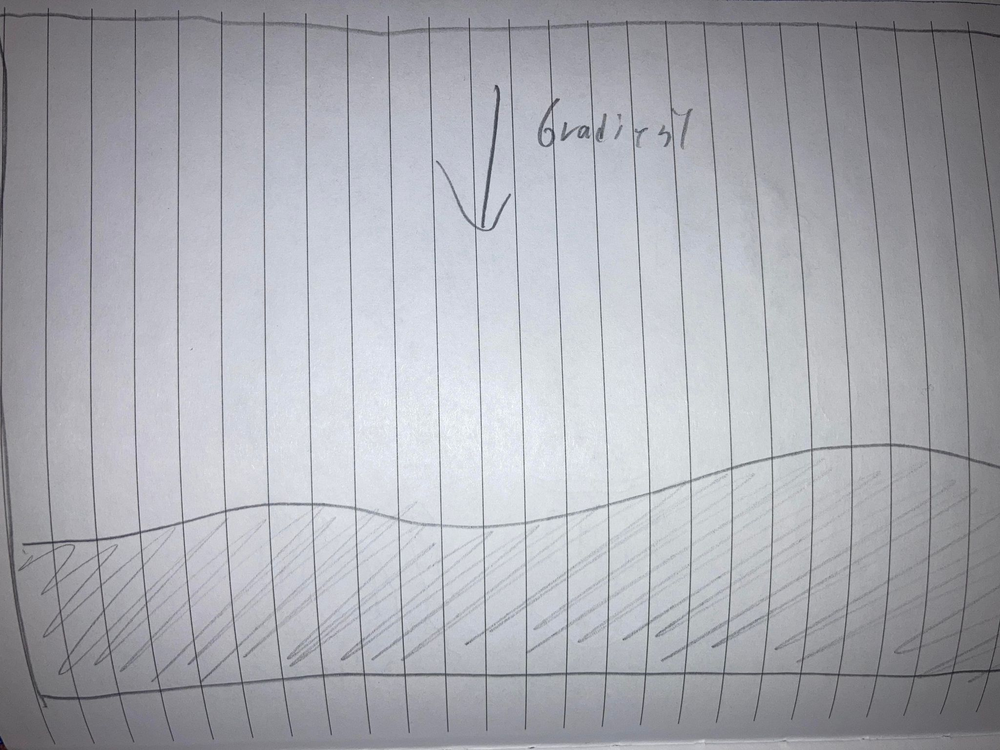
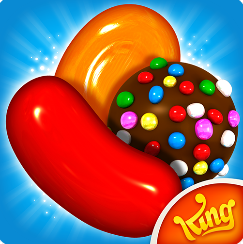
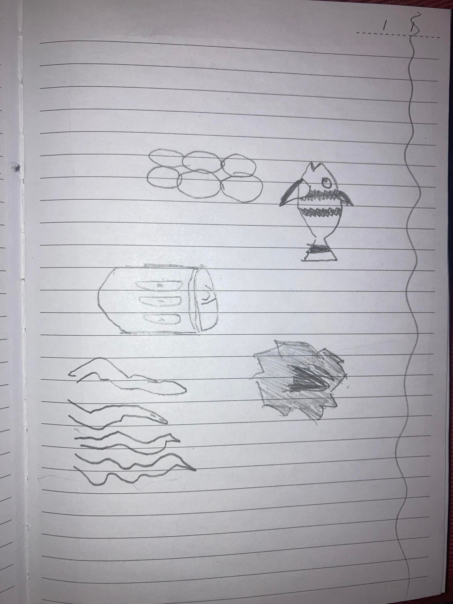

Grafik
Skitser og ispiration
Min inspiration og designprocess, var ikke endvidere gnidningsfri. Jeg startede med at ville lave noget meget simpelt, i stil med 2d sprite spil fra 80'erne og 90'erne. Da jeg dog så begyndte at lave mine ting i illustrator, skiftede jeg stilen en smule, og gik over i en mere moderne stil, primært fra Candy Crush, som ses nedenfor. Det vil sige runde former, og store highlights


